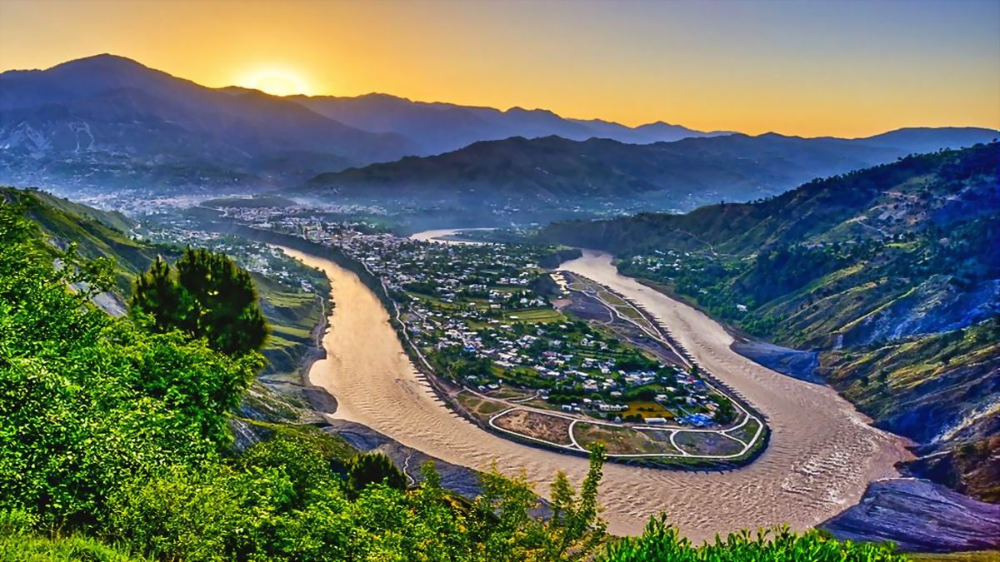

<div class="portfolio-single-load clearfix">
    <div class="custom-full-width-box">
        <div class="custom-container">
            <div class="custom-row align-items-center">
                <div class="custom-image-column">
                    
                </div>
                <div class="custom-text-column">
                    <h2 class="custom-heading">Muzaffarabad
                    </h2>
                    <p class="custom-paragraph">
                        Muzaffarabad, the bustling capital of Azad Kashmir, boasts a population of approximately 750,000 residents. Situated at the confluence of the Jhelum and Neelum rivers, it sits at an elevation of 724 meters, offering a temperate climate and stunning vistas. Steeped in history, Muzaffarabad features landmarks like the iconic Red Fort and Pir Chinasi, attracting history buffs and adventurers alike. Renowned for its lush greenery, roaring rivers, and panoramic landscapes, Muzaffarabad serves as a gateway to the enchanting Azad Kashmir region.

                    </p>
                </div>
            </div>
        </div>
    </div><!-- .custom-full-width-box end -->

</div><!-- end single-project -->
